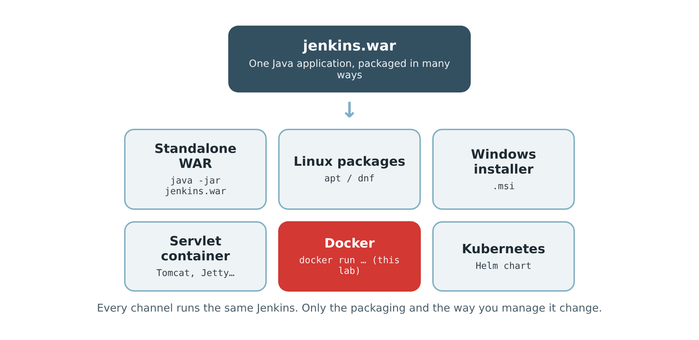

Lab 1
2. Installation Channels
Jenkins is distributed through many channels. They all run the same application, jenkins.war; only the packaging and the way you manage it change.

Which channel for which situation?
- Standalone WAR: a quick test on any machine that has Java.
- Linux packages: a Linux server, with a service that starts automatically.
- Windows installer (.msi): a Windows server; Jenkins runs as a Windows service. See Installing Jenkins on Windows.
- Servlet container: an organisation that already runs Tomcat or another Java application server.
- Docker: an isolated, reproducible installation in one command. This is the path we use in the lab.
- Kubernetes: Jenkins in a cluster, for teams that need to scale.
The Jenkins installation documentation has complete instructions for every channel. The next pages explain each one.